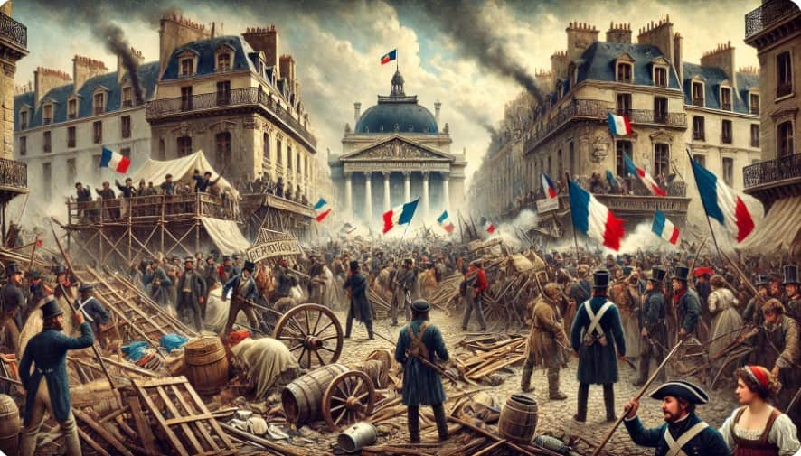
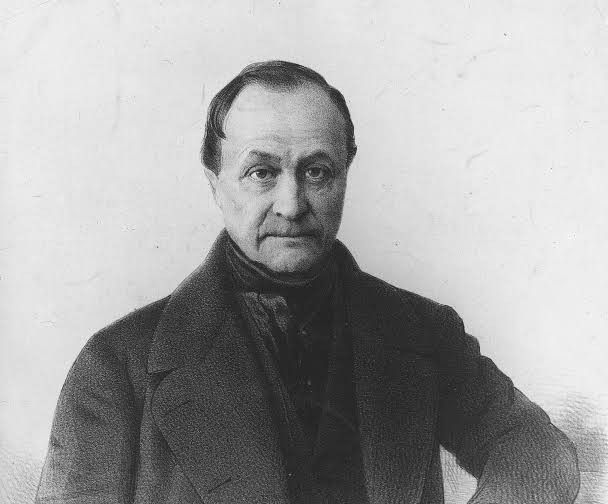
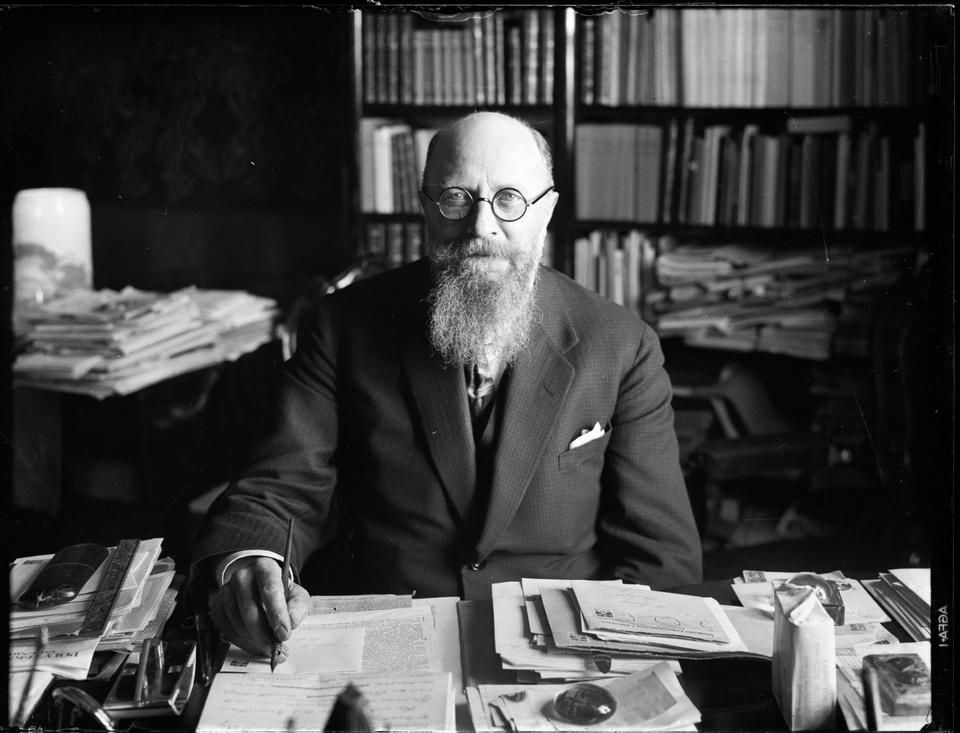
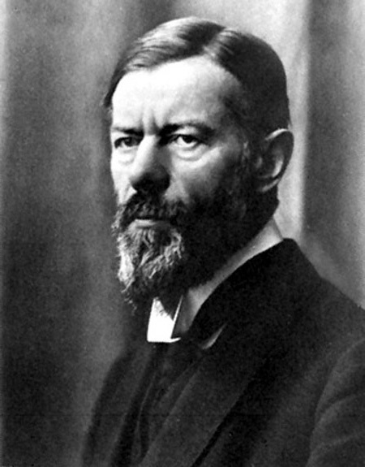
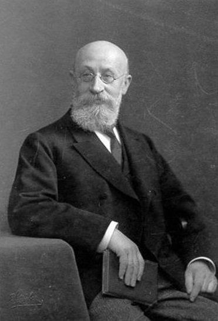
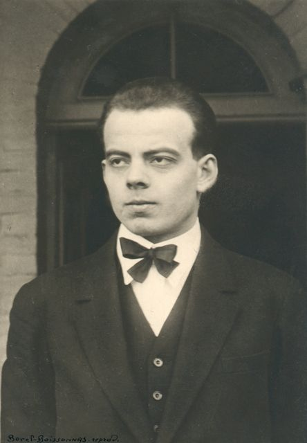
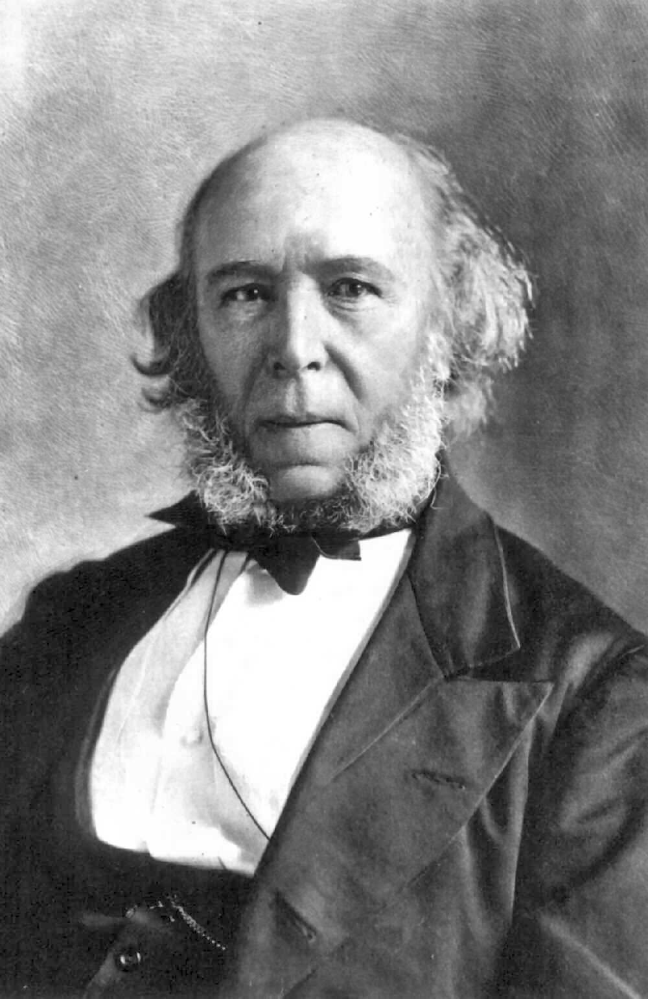

Semana 1 · Ciencia y Ciencias Sociales
Del concepto de ciencia al surgimiento de las disciplinas que estudian la sociedad.
¿Qué es la ciencia?
La ciencia puede entenderse como un conjunto de conocimientos racionales, ciertos o probables, obtenidos mediante métodos, organizados sistemáticamente y verificables. Busca explicar fenómenos, descubrir relaciones y construir conocimientos que puedan ser comunicados y revisados.
La investigación científica utiliza procedimientos ordenados para observar la realidad, formular preguntas, plantear hipótesis cuando corresponde, analizar información y construir explicaciones. Por ello, la ciencia no consiste simplemente en acumular datos, sino en producir conocimiento organizado y fundamentado.
Fáctica
Parte de hechos y fenómenos observables de la realidad. Busca estudiar acontecimientos que pueden ser analizados.
Metódica
Utiliza procedimientos y métodos para producir conocimiento de manera organizada.
Analítica
Descompone los problemas en diferentes partes para estudiarlos con mayor claridad.
Sistemática
Organiza los conocimientos de forma relacionada y coherente.
Explicativa
Busca comprender causas, relaciones y condiciones que permiten explicar los fenómenos.
Predictiva
A partir del conocimiento disponible puede formular expectativas o explicaciones sobre situaciones futuras.
El origen de las Ciencias Sociales
Las primeras reflexiones sobre la sociedad aparecen desde la Antigüedad. En civilizaciones como Grecia, Egipto y Roma existían conocimientos relacionados con la política, el derecho, la organización social, la educación y las formas de gobierno. Sin embargo, todavía no constituían ciencias sociales modernas.
Durante el Renacimiento de los siglos XV y XVI se fortalecieron la observación, la investigación y nuevas formas de pensamiento. Posteriormente, durante la Ilustración del siglo XVIII, la razón y el conocimiento adquirieron una importancia central.
Las transformaciones producidas por la Revolución Francesa y la Revolución Industrial modificaron profundamente las instituciones, la economía, las ciudades, el trabajo y las relaciones entre diferentes grupos sociales. Estos cambios favorecieron la aparición de nuevas disciplinas dedicadas al estudio sistemático de la sociedad.

Principales Ciencias Sociales
Economía
Estudia la producción, distribución y consumo de bienes y servicios, así como el uso de recursos.
Derecho
Estudia las normas, instituciones jurídicas y relaciones relacionadas con la justicia y la convivencia.
Historia
Analiza acontecimientos del pasado y los procesos mediante los cuales se desarrollan las sociedades.
Sociología
Estudia científicamente la sociedad, las relaciones sociales, los grupos, las instituciones y los fenómenos colectivos.
Antropología
Estudia al ser humano, sus culturas, pueblos, formas de vida y diversidad social.
Ciencia Política
Estudia el poder, el gobierno, las instituciones políticas, la autoridad y la toma de decisiones.
Demografía
Analiza estadísticamente las poblaciones humanas, incluyendo su tamaño, distribución, composición y cambios.
Geografía Humana
Estudia las relaciones entre las sociedades humanas, los territorios y los espacios donde viven.
Semana 2 · ¿Qué es la Sociología?
Conoce a seis pensadores fundamentales y descubre qué estudia la sociología.

Auguste Comte
Pensador francés fundamental para la formación de la sociología y del positivismo.

Émile Durkheim
Estudió los hechos sociales y la forma en que las sociedades mantienen la cohesión.

Max Weber
Desarrolló una sociología comprensiva centrada en la acción social y el significado.
Karl Marx
Analizó el capitalismo, las relaciones de producción, las clases sociales y el conflicto.
Pierre Bourdieu
Analizó la desigualdad social mediante conceptos como habitus, campo y diferentes formas de capital.

Anthony Giddens
Relacionó la estructura social con la capacidad de acción de las personas.
¿Qué estudia la Sociología?
La sociología estudia las relaciones sociales, las instituciones, los grupos, las organizaciones y los procesos mediante los cuales las personas construyen y transforman la vida colectiva.
Sociedad y estructuras
Desde familias y grupos hasta comunidades, organizaciones y naciones.
Comportamiento social
Analiza cómo las personas actúan e interactúan en diferentes contextos sociales.
Fenómenos colectivos
Estudia migración, cultura, religión, estratificación, movimientos sociales y otros fenómenos.
Cambio social
Analiza procesos de transformación, continuidad y ruptura dentro de las sociedades.
Semana 3 · Historia de la Sociología
Haz clic en cada acontecimiento para abrir su expediente histórico.
Primeras reflexiones sobre la sociedad
Filósofos y pensadores de la Antigüedad reflexionaron sobre política, justicia, gobierno y organización social.
Abrir expediente →Renacimiento
El pensamiento europeo experimentó cambios importantes y aumentó el interés por la observación y el conocimiento.
Abrir expediente →La Ilustración
La razón, la crítica y el conocimiento científico adquirieron un papel central.
Abrir expediente →Revolución Francesa
Transformó las estructuras políticas y sociales de Francia y tuvo repercusiones en Europa.
Abrir expediente →Revolución Industrial
La industrialización modificó la producción, el trabajo, las ciudades y las relaciones sociales.
Abrir expediente →Nacimiento de la Sociología
Las grandes transformaciones sociales impulsaron el desarrollo de una disciplina dedicada a estudiar científicamente la sociedad.
Abrir expediente →Expansión de las teorías sociológicas
Aparecieron y se consolidaron diferentes corrientes para explicar la vida social.
Abrir expediente →Sociología contemporánea
La disciplina analiza globalización, tecnología, desigualdad, movimientos sociales y nuevos desafíos.
Abrir expediente →Funcionalismo
Parsons y Merton analizaron las funciones de las instituciones y la manera en que contribuyen al funcionamiento de los sistemas sociales.
Teoría del conflicto
Analiza diferencias de poder, intereses y recursos entre grupos sociales.
Interaccionismo simbólico
Mead y Blumer estudiaron cómo las personas construyen significados mediante la interacción.
Teoría crítica
La Escuela de Frankfurt analizó capitalismo, cultura, medios de comunicación y formas de dominación.
Habitus
Bourdieu explicó cómo las disposiciones sociales y los diferentes capitales influyen en las prácticas.
Estructuración
Giddens estudió la relación entre las estructuras sociales y las acciones de las personas.
Sociología del siglo XXI
- Globalización: migraciones, intercambios culturales, relaciones económicas y problemas de alcance mundial.
- Sociedad digital: Internet, redes sociales, inteligencia artificial, identidad digital y privacidad.
- Nuevas desigualdades: diferencias relacionadas con recursos económicos, educación, empleo y acceso tecnológico.
- Movimientos sociales: derechos humanos, igualdad, ambiente, justicia social y participación ciudadana.
- Riesgos globales: cambio climático, pandemias, conflictos, desplazamientos y crisis económicas.
Semana 4 · Grandes exponentes
Un museo virtual de los principales pensadores estudiados. Pulsa “Ver perfil” para abrir su expediente.

Henri de Saint-Simon
Precursor de la sociología y del pensamiento social moderno.
Auguste Comte
Desarrolló el positivismo y fue fundamental para la formación de la sociología.

Herbert Spencer
Estudió la sociedad desde una perspectiva evolucionista.
Émile Durkheim
Estableció los hechos sociales como un objeto fundamental del análisis sociológico.
Karl Marx
Analizó capitalismo, producción, clases sociales y conflicto.
Max Weber
Desarrolló la sociología comprensiva y estudió la acción social.
Mapa rápido de conceptos
Comte
Positivismo → Ley de los tres estadios → Sociología científica.
Durkheim
Hechos sociales → método → solidaridad → integración.
Marx
Producción → clases → conflicto → transformación social.
Weber
Acción social → significado → comprensión → dominación.
Semana 5 · Teorías y análisis social
Explora el funcionalismo, el materialismo histórico, el conflicto y la acción social.
Parsons y el modelo AGIL
El análisis de Talcott Parsons considera la sociedad como un sistema formado por diferentes partes relacionadas. Para mantenerse y desarrollarse, un sistema social debe resolver determinadas necesidades funcionales.
Status
Posición que una persona ocupa dentro de una estructura social. Puede ser atribuido o adquirido.
Rol
Conjunto de expectativas y comportamientos asociados con una determinada posición social.
Grupo social
Conjunto de personas que mantienen relaciones e interacciones y comparten determinadas características o vínculos.
Categoría social
Personas agrupadas por una característica compartida, aunque no necesariamente interactúen entre ellas.
Estratificación
Forma en que una sociedad organiza las diferencias y desigualdades entre posiciones sociales.
Socialización
Proceso mediante el cual las personas aprenden normas, valores, conocimientos y formas de comportamiento.
Materialismo histórico
El materialismo histórico es una perspectiva asociada principalmente con Karl Marx y Friedrich Engels. Analiza la historia considerando las condiciones materiales de vida, las fuerzas productivas y las relaciones de producción.
Desde esta perspectiva, las formas de organización económica se relacionan con las instituciones y las ideas de una sociedad. Las contradicciones y conflictos existentes dentro de una estructura social pueden contribuir a producir transformaciones.

Modos de producción
Comunismo primitivo
Concepto utilizado en determinadas interpretaciones históricas para describir formas tempranas de organización comunitaria, cooperación y subsistencia.
Esclavismo
Sistemas históricos en los que personas eran sometidas a relaciones de esclavización y utilizadas como fuerza de trabajo.
Feudalismo
Forma de organización medieval caracterizada por una economía principalmente rural y relaciones sociales vinculadas a la tierra.
Capitalismo
Sistema basado en la propiedad privada de los medios de producción, el mercado y el trabajo asalariado.
Teoría del conflicto
La teoría del conflicto considera que las diferencias de intereses, poder y recursos forman parte de la vida social. Los grupos pueden tener objetivos distintos y competir por recursos materiales, políticos, económicos o simbólicos.
Poder
Capacidad de influir sobre decisiones, recursos o comportamientos.
Intereses
Necesidades, objetivos y aspiraciones que pueden entrar en competencia.
Recursos
Bienes y oportunidades cuya distribución puede ser desigual.
Estructuras
Organizaciones y relaciones que pueden mantener o modificar las desigualdades.
Ideologías
Ideas y valores que pueden justificar, explicar o cuestionar determinadas relaciones sociales.
Cambio social
Transformaciones producidas mediante tensiones, conflictos, movimientos y procesos históricos.
Weber: descubre la acción social
Para Max Weber, una acción es social cuando el significado que la persona le atribuye está orientado hacia la conducta de otras personas.
Críticas al funcionalismo
- Puede presentar una imagen demasiado estática de la sociedad.
- Puede dar demasiado peso a la integración y el consenso.
- Puede prestar menos atención al conflicto y a la autonomía individual.
- Desde perspectivas marxistas se ha criticado su énfasis en la estabilidad de las instituciones.
Quiz del Archivo
Comprueba cuánto recuerdas de las cinco semanas.
1. ¿Quién acuñó el término sociología?
2. ¿Cuál es el objeto central de estudio propuesto por Durkheim?
3. ¿Qué concepto se relaciona con Marx?
4. ¿Qué significa la A de AGIL?
5. ¿Cuándo una acción es social según Weber?
6. ¿Qué teoría analiza especialmente las diferencias de poder e intereses entre grupos?
Referencias
Fuentes y autores trabajados durante el recorrido.
- Marín, A. L. (1995). Fundamentos de teoría sociológica.
- Ritzer, G. (1997). Teoría sociológica contemporánea. McGraw-Hill.
- Ritzer, G. (2002). Teoría sociológica moderna. McGraw-Hill.
- Giddens, A. (1982). Las nuevas reglas del método sociológico.
- Material de estudio correspondiente a las semanas 1–5 del curso.